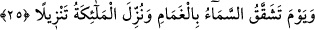
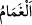
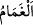

Kanın, pâk olan nefesle miske döner
Ola ki beden canı da pâk olur, temizlenir
25. O gün gökyüzü beyaz bulutlar ile yarılacak ve melekler bölük bölük
indirileceklerdir.
“O gün gökyüzü beyaz bulutlar ile yarılacak” yâni gökyüzünün bulutlarla açıldığı
günü hatırla!
“ bulut demektir. Güneş ışığını örttüğü için bulutlara bu isim verilmiştir. “
bir şeyi örtmek anlamındadır. Yâni bulutların gökyüzünden doğuşu sebebiyle gökyüzü
yarılacak demektir. “Onlar ille de buluttan gölgeler içinde Allah’ın ve meleklerinin
gelmesini mi beklerler?” (el-Bakara, 2/210) âyetinde zikredilen bulutlar bu
bulutlardır. Denilir ki: Bu, sis gibi ince beyaz bir buluttur. Bu bulut sadece İsrâiloğulları
için indirilmiştir. Yâni bu, Tih çölünde İsrâiloğullarına gölgelik eden buluttur.
Ebü’l-Leys der ki: “ yedi kat semânın üzerindeki beyaz bulut gibi bir şeydir.
Nitekim bir hadîste: “Mazlûmun duâsı gamâm/bulut üzerine yükseltilir.”[203]
buyrulmuştur.” Nesefî (r.h.) da şöyle der: “ yedi kat semânın üzerinde kalınlığı
yedi gök kadar olan beyaz bir buluttur. Allah bugün onu kudretiyle tutar. Onun ağırlığı
da gökler kadardır. Allah gökleri parçalamak istediğinde o bulutun ağırlığını gökler
üzerine bırakır ve gökler dağılıp parçalanır. İşte âyette anlatılan budur: “O gün gökyüzü
beyaz bulutlar ile” onların ağırlığı ile “yarılacak” o bulutun ağırlığı sebebiyle gökler
parçalanır. Bulut görünür ve göklerden çıkar. Melekler de onun içindedir. Nitekim Allah
Teâlâ şöyle buyurur: “Melekler bölük bölük indirileceklerdir.” Meleklerin indirilmesi
hayret verici bir durumdur, alışılagelmiş bir indirme değildir. Denilir ki: Gökler teker
teker parçalanır, melekler de kulların amel defterleriyle birlikte bu bulutun içinde iner.
Bir rivâyete göre dünya semâsı parçalanır, dünya semâsının melekleri dünyadaki
insanlar ve cinler gibi dünyaya inerler. Yeryüzü halkı onlara “Rabbimizin hesâba çekme
emri geldi mi?” derler. Onlar “Hayır, yakında gelecek” derler. Sonra ikinci semânın
melekleri, yeryüzündeki melekler, insanlar ve cinler gibi inerler. Sonra sırasıyla yedinci
kat semânın melekleri ininceye kadar her semânın melekleri böyle inerler. Sonra bulut
ortaya çıkar. Bu bulut yedi kat semâ üzerindeki beyaz bulut gibidir. Bundan sonra da
hesâp emri iner. İşte “O gün gökyüzü beyaz bulutlar ile yarılacak” âyeti buna işâret
etmektedir. Ancak yeryüzünün dünya semâsına kıyâsen çöldeki bir halka gibi olduğu
sâbit olmuştur. Kürsîye ve arşa kıyasen durum nasıl olur, bu yerlerin meleklerinin
hepsini yeryüzü nasıl içine alır düşün! Şeyhzâde’nin Hâşiye’sinde böyle geçmektedir.
Fakir (Bursevî) der ki: Allah kıyâmet günü yeryüzünü deri gibi uzatır ve genişler.